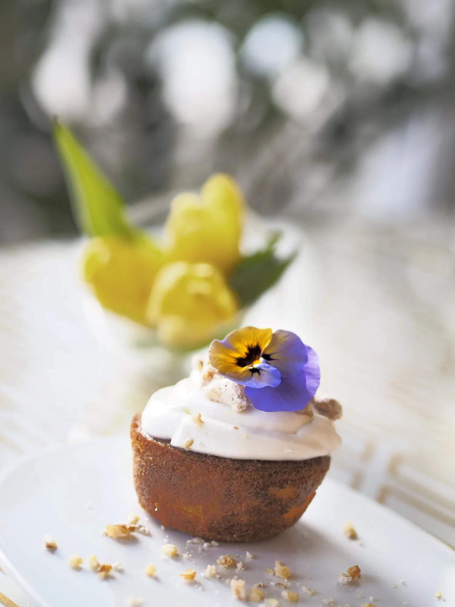

Comfort
14 camere · m²
Per una o due notti di lavoro.
Soggiorna · Camere e suite
Camere rifatte nel 2021, spaziose, e un menu dei cuscini che gli ospiti citano nelle recensioni. Pulizia e comfort 8,98 su Booking.

In breve
Le camere
Insonorizzate, rifatte nel 2021. In tutte: wifi veloce, smart TV 55", minibar, cassaforte, bollitore per caffè e tè.
14 camere · m²
Per una o due notti di lavoro.

63 camere · m²
La più prenotata da chi resta da lunedì a giovedì.

35 camere · m²
Più spazio per lavorare in camera.

21 suite · m²
Per ricevere qualcuno senza scendere in hall.


Da confermareTipologie e numeri dal factsheet 2025. Le foto vengono dallo shooting 2021 (serie Cozy, Stylish, Roomy, Snuggle): l'abbinamento con Comfort, Superior, Executive e Junior Suite è da verificare. Mancano metrature, letti, e quante camere per tipologia danno sulla corte e quante su Via Tocqueville (PROGETTO.md §13, punto 4). Le Smart Working Suite del factsheet vanno collocate in una tipologia.
Solo prenotando qui
Su Booking prenoti una camera. Qui scegli il cuscino, il materasso e il lato da cui dormi. Lo trovi pronto quando arrivi.
Per lo sviluppoLe scelte passano al booking engine come servizi selezionabili (meglio) o richieste speciali, e arrivano alla governante nel report degli arrivi. Da verificare con il fornitore del motore.
Colazione
Rosetta coordina la sala dal 2021. Con lei Maria, Marco e Giorgio.
Buffet italiano e internazionale, con una selezione orientale, halal, senza glutine e vegana.
Aperta anche a chi non dorme qui: 16 €. Un ospite di TripAdvisor ci è venuto apposta e l'ha paragonata a quella di un cinque stelle.
| Lunedì–venerdì | 06:30–10:30 |
| Sabato, domenica e festivi | 07:00–11:00 |
| Da asporto | dalle 05:30, alla reception |
| Ospiti esterni | 16 € |

Detto prima, non scoperto dopo
Il lato corte e i piani alti sono per chi lo chiede nel configuratore. Da giovedì a domenica li assegniamo prima a chi ha una riunione o un treno presto.
Regola unica da definire con la direzione. Una frase sola per tutto il banco, scritta qui e nella conferma di prenotazione. Se in camera fa caldo, il ventilatore e il cambio di lato sono già pronti.
Prima del check-in, dopo il check-out, anche quando torni tre giorni dopo. Senza chiedere.
Garage convenzionato a 25 € al giorno. Le condizioni sono queste, non cambiano alla partenza.
Una caraffa d'acqua filtrata, bicchieri di vetro, due cialde di caffè a testa, il listino del minibar in vista. La borraccia Tocq è tua.
Una fattura sola, con i dati dell'azienda presi alla prenotazione. Se torni, la stessa camera della volta prima, quando è libera.
NotaQuesti sono gli impegni delle mosse 1–4 del capitolo 10. Si pubblicano solo quando la direzione li ha adottati: il sito promette la notte, e qualcuno viene a verificarla.
Prima di prenotare
Risposte brevi, con i numeri. Se manca la tua domanda, la reception risponde 24 ore su 24: +39 02 62071.
Prenota
"C'era il menù cuscini, quindi colpa mia a non averli richiesti."
Un ospite, su Booking · ora lo scegli prima di arrivare